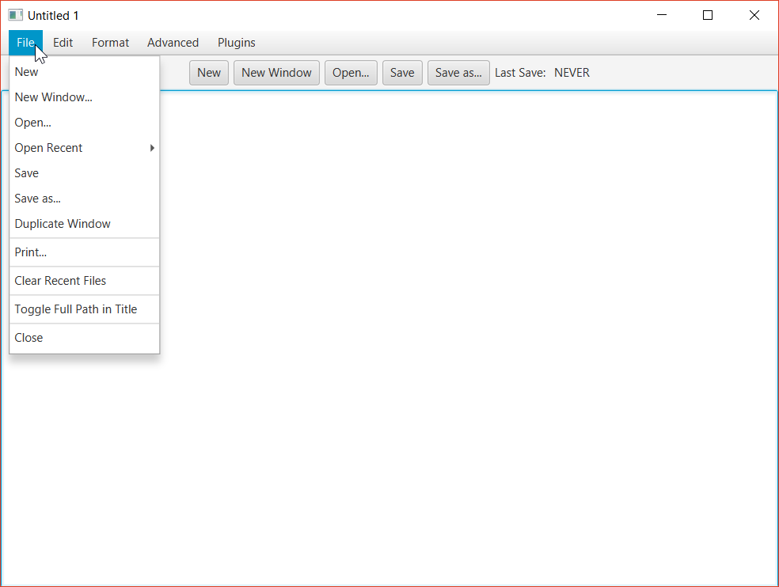

Below is a list of some of the interesting programming projects that I have created. Some of these were done independently and some were done in groups and this is indicated in the description of the project. The projects include screenshots and (were possible) links to the source code.

A recreation of notepad in Java using JavaFX. This was an excercise in JavaFX and GUI design. It is a fairly simple text editor that has autosave, recovery features, multiple windows, open/save/duplicate, copy, cut, pase, find, replace, and insert time/date features.